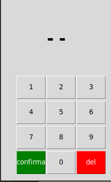
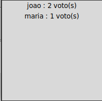

Abra um TERMINAL ou CMD na pasta do projeto e digite:
pip install -r req.txt
Isso irá fazer com que o PIP instale os pacotes necessários
Execute o arquivo menu.py para acessar as funcionalidades
Ao cadastrar os candidatos desejados, feche a janela
Clicando na segunda opção, a seguinte janela irá ser exibida:

Digite o número do candidato desejado e aperta no botão 'confirma'
Caso tenha errado o número, clique no botão 'del'
Após todos votarem, feche a janela
Clicando na última opção deverá ser exibida uma janela contendo o nome dos candidatos e o número de votos
